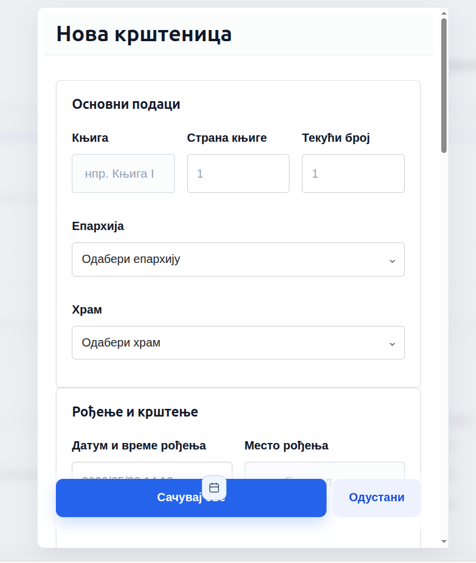
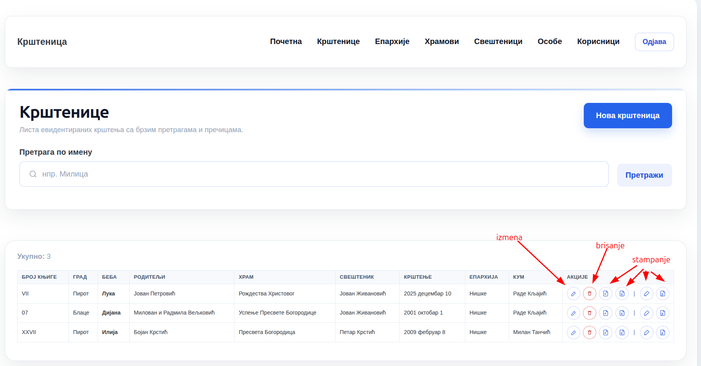

Визуелно упутство за рад у Krstenica GUI
Кратко упутство са сликама, редоследом како се систем користи у пракси.
1. Пријава и почетни екран

Унеси корисничко име и лозинку, па потврди пријаву.

После пријаве отвара се почетна страница са главном навигацијом.
2. Рад са крштеницама

Овде се види табела са већ уписаним крштеницама.

Кликни на нови унос и попуни основне податке. Датумска поља се аутоматски попуњавају текућим датумом.

После уписа крштеница се појављује у табели и може да се претражује, мења или штампа.
3. Епархије и храмови

У овом прозору се мењају постојећи подаци о епархији.

Овде се додаје нова епархија.

Овај прозор служи за ажурирање података о храму.

Уноси се нови храм уз избор одговарајуће епархије и града.
4. Свештеници и особе

Овде се мењају подаци о свештенику.

Уноси се нови свештеник и повезује са одговарајућим подацима.

Овај прозор се користи за податке који се касније бирају у крштеници.

Додаје се нова особа која може да буде родитељ, кум или друга повезана ставка.
Напомена: Ако желиш, могу и да скратим ово на мање корака или да променим редослед слика тако да прати твој стварни ток рада.